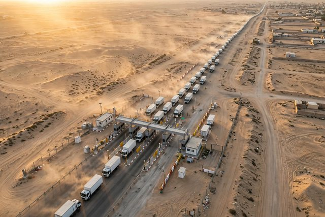

Gaza
West presses Israel to open Gaza crossings
Britain, Australia, Canada and Italy jointly urged Israel to let aid in fast, calling the situation catastrophic, as UN agencies warned of a winter emergency for 1.7 million displaced people.